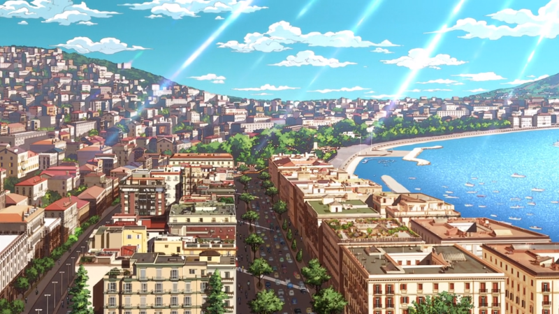
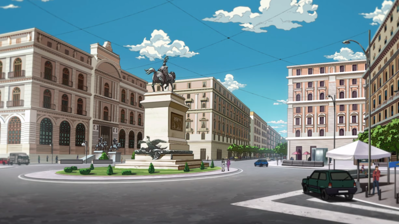
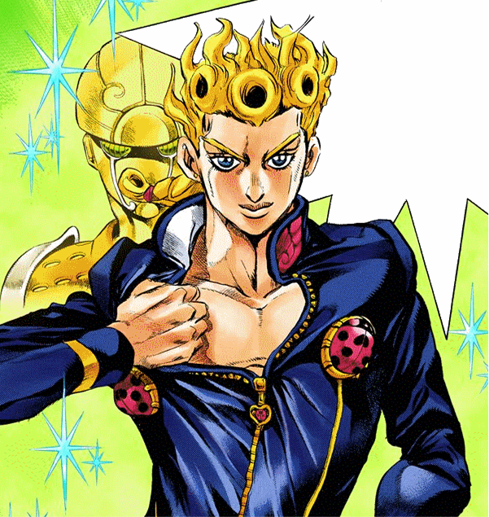
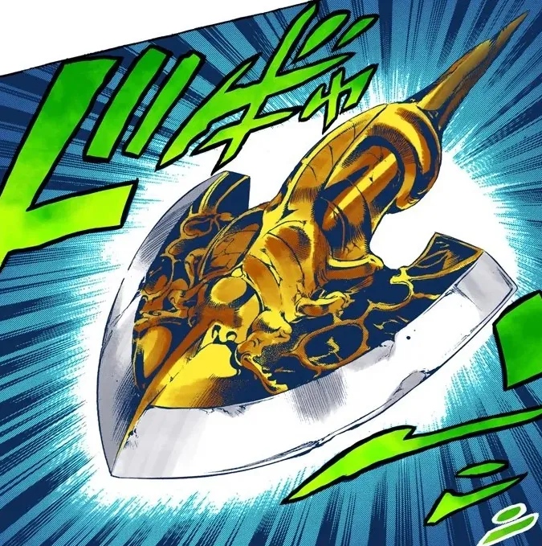
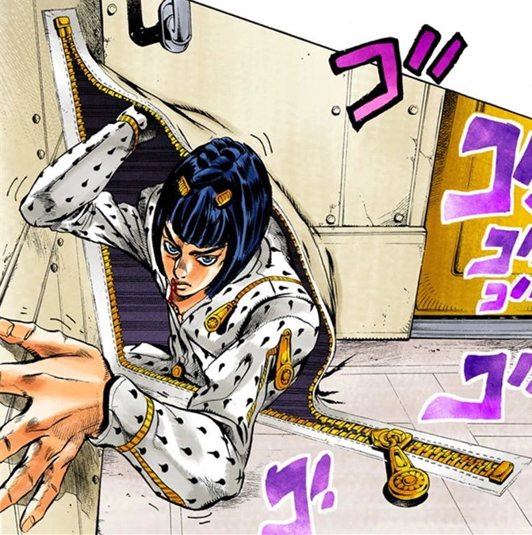
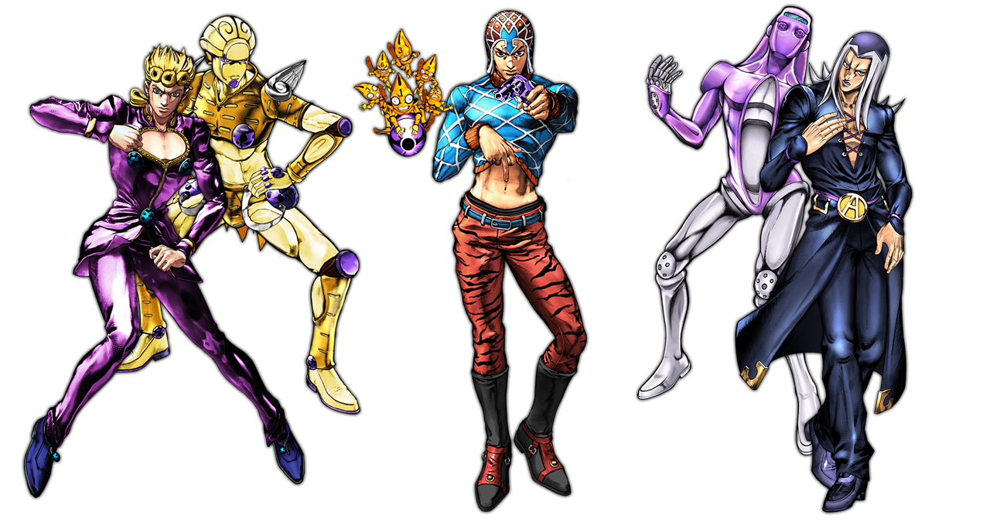

(BACKGROUND)
이탈리아 전역을 무대로 하며, 르네상스 이후의 고전 건축 양식과 도시적 공간미가 작품 전반에 깊게 깔려 있다. 베네치아 운하, 로마의 대리석 골목, 나폴리의 해안가 등 실제 도시 공간을 기반으로 한 풍경이 다수 등장하며, 그 안에서 등장인물들은 예술 작품처럼 배치된다. 배경의 질감은 석조, 대리석, 벽화, 모자이크 등으로 구성되어 이탈리아 예술사적 감수성을 반영하고, 따뜻한 황금빛 조명은 인물의 존재감을 더욱 극적으로 부각시킨다.


(SYMBOL)



죠르노 죠바나 – 무당벌레 브로치
죠르노의 아이덴티티를 대표하는 상징으로, 그의 옷과 장신구에 반복적으로 등장한다. 무당벌레는 생명, 행운, 자연의 순환을 의미하며, 스탠드 ‘골드 익스피리언스’의 핵심 테마인 “생명 창조”와 직결된다. 브로치가 분리되어 실제 생명체로 움직이는 연출은, 생명과 무생물의 경계가 사라지는 죠르노의 능력을 시각화한 장치다. 디자인적으로는 금속 질감과 유려한 곡선을 가진 형태로, 패션 오브제이자 생명체로서의 이중성을 지닌다.
레퀴엠의 화살
단순한 각성의 도구가 아니라, 영혼의 진화를 상징한다. 일반적인 화살이 스탠드를 ‘깨우는’ 매개체였다면, 레퀴엠의 화살은 ‘자아를 초월한 의지의 각성’을 가능하게 하는 존재다. 죠르노가 이 화살을 통해 얻는 스탠드 ‘골드 익스피리언스 레퀴엠(GER)’은, 단순한 힘의 승리가 아니라 “운명 그 자체를 거부하는 절대적 의지”의 구현이다. 시각적으로는 기존의 화살보다 더 유기적이고 신성한 곡선, 그리고 금빛과 검은빛의 대비로 표현되어 “생명과 죽음, 빛과 어둠의 경계”를 초월하는 상징성을 가진다.
브루노 부차라티 - 지퍼
스탠드 ‘스티키 핑거즈’의 핵심 모티프. 경계와 연결을 상징하며, 공간과 인체를 자유롭게 여닫는 능력으로 생과 사, 정의와 범죄의 경계를 넘나드는 인물을 표현한다. 흰 슈트와 금속 지퍼 조합은 순수와 냉철함의 대비를 드러낸다. 지퍼는 부차라티의 윤리, 선택, 그리고 ‘닫힌 세계를 여는 의지’의 상징이다.
(FORM)
5부의 인체 표현은 조각상처럼 늘어난 비율과 유려한 근육선으로, 르네상스 인체미학과 하이패션 일러스트의 절충이라 할 수 있다. 포즈는 고전 조각의 콘트라포스토(Contrapposto)를 차용하면서도, 움직임의 긴장감과 현대적 패션 감각을 동시에 담고 있다. 의상은 기능성보다 조형미를 중시하며, 베르사체・돌체앤가바나 등 이탈리아 패션의 조형적 영향이 드러난다. 핏감이 강한 슈트, 금속 질감의 장식, 곡선적인 패턴은 인물의 개성과 심리를 시각적으로 확장시킨다.
